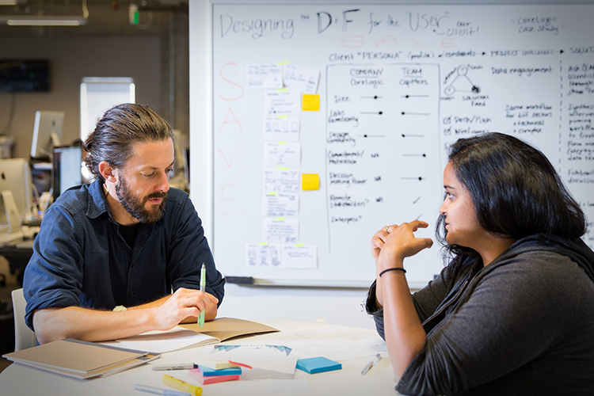

Why start with users and tasks?
Interface design does not begin with screens or buttons. It begins with understanding the people who will use the system and the work they need to do. Hackos and Redish explain that a user and task analysis helps designers move from assumptions to evidence: you observe users in their environment, identify their goals, and document the tasks they perform to reach those goals. This first step is what makes the difference between an interface that looks good and one that actually supports real work.

The same source stresses that users differ in personal, physical, cultural and motivational characteristics. These differences can lead to conflicting design demands, so designers must make informed compromises rather than designing for an imaginary "average user".
Who are the stakeholders?
A stakeholder is anyone affected by the system or who can influence its design. This includes direct users, but also managers, support staff, and sometimes external partners. Hackos and Redish emphasise that understanding the characteristics of potential users — their roles, jobs, tasks and tools — is essential for building user profiles that guide design decisions.
From goals to requirements
Once users and their context are understood, the next step is to translate that understanding into requirements. Usability engineering literature recommends treating usability as a set of measurable characteristics from the very beginning of a project, because fixing usability problems after implementation is far more expensive.
Requirements are not only functional ("the system must allow course enrolment"). They also include usability requirements such as efficiency, learnability, and error reduction. The next pages explore task analysis, use cases, measurable usability requirements, and the cognitive principles that help designers meet them.
Continue reading
2. Task Analysis and Use Cases →
Break down user tasks and describe interactions with scenarios and use cases.
3. Usability Requirements →
Turn user needs into measurable criteria such as task completion and error rate.
4. Cognitive Ergonomics and UX Laws →
Use mental models, Hick's Law and Fitts's Law to design intuitive interfaces.
Sources
- Hackos, J. T., & Redish, J. C. (1998). User and Task Analysis for Interface Design. Wiley.
- Holzinger, A. (2005). Usability engineering methods for software developers. Communications of the ACM, 48(1), 71–74.